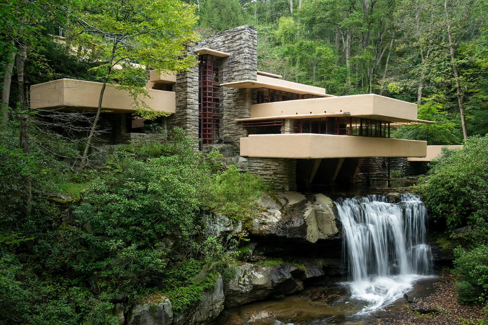

Frank Lloyd Wright

Fallingwater (1935): horizontal concrete terraces cantilevered over a waterfall in Pennsylvania woodlandFrank Lloyd Wright (8 June 1867 – 9 April 1959) was an American architect, designer, writer and educator. He designed more than 1,000 structures over a creative period of 70 years and pioneered what he called 'organic architecture' — designing in harmony with humanity and the environment — best embodied by Fallingwater (1935), 'the best all-time work of American architecture' by the American Institute of Architects' polling.
Early fame came from the Prairie School houses around Chicago (Robie House, 1910). Later landmarks include the textile-block houses of California, New York's spiralling Solomon R. Guggenheim Museum (opened 1959, the year of his death), the Johnson Wax headquarters with its lily-pad columns, and the Usonian homes that reshaped American domestic life. Eight of his buildings were inscribed as a UNESCO World Heritage Site in 2019.